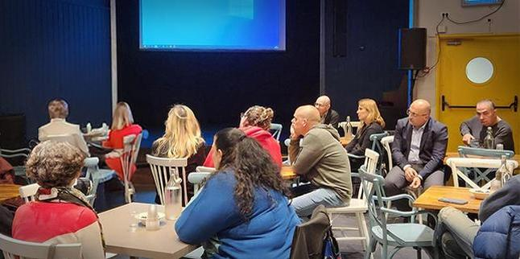

Photo: Liraz Maanit
Photo: Liraz Maanit
CineMandel, a social cinema club for all Mandel graduates who live in northern Israel, is a joint initiative of Liraz Maanit and Katef Morad Salama of the Mandel Center for Leadership in the North. The goal of the initiative is to host cultural and social events organized around movies, creating a space in which graduates can reconnect to the spirit of Mandel in an experiential way.
CineMandel was launched at the beginning of the 2022-2023 academic year as a pilot comprising five events. The movies shown were chosen very carefully. They were all connected to the field of humanities and reflected the Mandel Foundation’s values of leadership and tolerance. In addition, they all had a connection to the north of Israel, and reflected the broad tapestry of the region’s identities.
Cinema was chosen as the focus of the series because it is a narrative medium that tells a story visually. Film allows us to view others, who may be similar to us or different from us. It also brings us face-to-face with ourselves and with our emotions, whether expressed or repressed. Movies also provide us with opportunities for safe encounters with figures and identities that we do not meet every day, without making us feel exposed or putting us on the defensive, and thus put us in an optimal position to listen to others and explore their personal stories.
Photo: Liraz Maanit
The series was spearheaded by visiting faculty member Katef Morad Salama, one of the leaders of pedagogical development at the Mandel Center for Leadership in the North and the academic consultant to its program for regional leadership, who has a background in film, and Liraz Maanit, the Center’s graduate community facilitator. They realized the potential of events built around screening movies with strong, social messages combined with discussions that reflect the diversity of Mandel graduates. These events offer an exceptional opportunity to create a safe space for graduates to voice their feelings and opinions, while bonding socially. They also bring together graduates of the Foundation’s different programs who live and work in the North.
The project began at the end of January with a screening of the movie Cinema Sabaya, Israel’s Oscar submission for 2023, which focuses on a group of Jewish and Arab women who meet at a videography workshop held in the Netanya–Wadi ’Ara area and document their lives. The screening was followed by a conversation with the director, Orit Fouks Rotem.
In February, the drama More Than I Deserve was shown, in the presence of the movie’s director, Pini Tavger, who wrote the screenplay based on his life in Kiryat Ata as the son of a single mother. The film explores immigration from Ukraine, addressing a burning issue in Israeli society.
The third event was a special evening held in March, which included an iftar meal to break the Ramadan fast. Dr. Ohad Ofaz spoke about a unique program at Oranim College of Education called “Dialogue Through Cinema,” in which Jewish and Arab students, both religious and secular, participate in intercultural dialogue and create short films together. The discussion was followed by a screening of Do You Hear the Moazin? and with a conversation with the movie's creators, Awni Matani and Alex Roitman.
 Photo: Liraz Maanit
The fourth event, held in mid-May, was different from the others and was a family event, in which the graduates were invited to bring their children. Instead of a single movie, two episodes of the successful children’s series Madrasa, produced by the Israel Broadcasting Corporation, were shown. The discussion afterward featured actors from the series.
The fifth and final event took place in mid-June and featured the documentary movie My Hero Brother, which follows a group of young Israelis with Down syndrome who embarked on a backpacking trek in the Himalayas, accompanied by their brothers and sisters. After the screening, there was a conversation with the director and writer, Yonatan Nir.
All the events were attended by dozens of graduates from different Mandel programs conducted by the Foundation’s five program units, with an average of 80 graduates attending each. The events all garnered many responses that cited the importance of the event for graduates and revealed how keen the graduates are for an ongoing, meaningful relationship with the Foundation. “It was uplifting, and as usual, thought-provoking, creating a positive form of writer’s envy,” wrote one participant. “The most pleasing thing for me was that for more than two hours, we were able to come together, speak, listen, and share social, communal, and personal issues just like we used to. It was an absolute pleasure.”
{kind=link}
{kind=link}